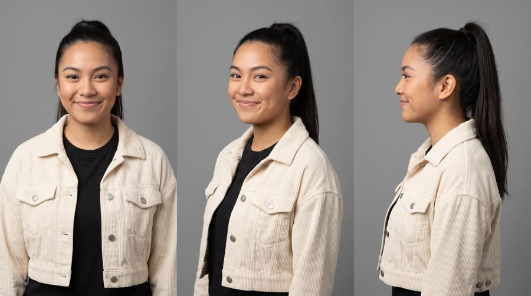
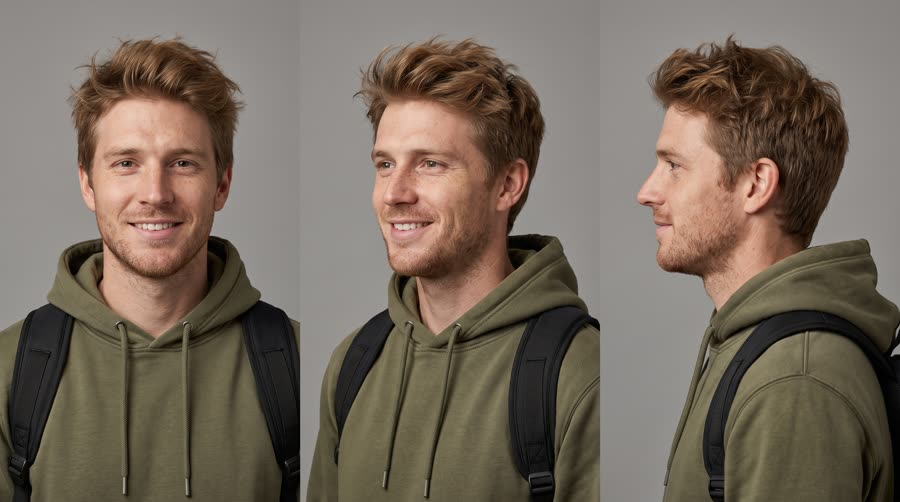
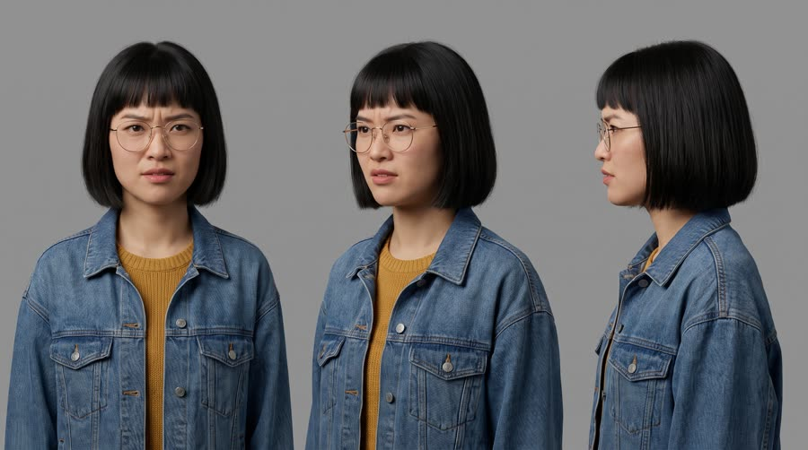
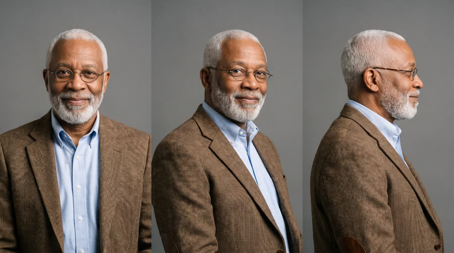

Can You Tell?
A street host runs a blind sip test on a college quad: sugar or no sugar? Everyone, including a chemistry professor, says sugar. The sleeve comes off: it's Red Bull Sugarfree.
Social proof from people who look unscripted, delivered in the grammar of a format viewers already watch for fun. StreetTalk reports over $100M attributable revenue and AI street interviews are reported at 4.5x ROAS as paid ads. The engine is surprise: a confident wrong answer, then a genuine reaction to the reveal. Dies instantly if it looks staged or polished.
Contact sheet
One keyframe per shot, with the caption as it will appear.


Cast and world

Voice: quick, bright, playful, American, a laugh always close

Voice: confident, easygoing, Midwestern

Voice: sharp, animated, West Coast

Voice: deep, measured, amused, Southern American lilt
World. The main quad of a fictional North American college on a bright autumn afternoon between classes: brick buildings, big maples turning orange, students and staff crossing the lawn, benches, a stone path. Palette. Real campus colours: grass green, red brick, orange leaves, denim. The product colours live only on the host's sky-blue and silver mic flag.
Fictional brands. Quad Talk (the host's street interview channel, on the mic flag and the end card, added in post)
Beats
| Time | Beat | What happens |
|---|---|---|
| 0-2.4 | hook | Bea straight into the lens on the quad, sleeved can and sample cups in hand: sugar or no sugar? |
| 2.4-10.6 | answers | Three quick blind sips, three confident answers: sugar. The chemistry professor is the most certain. |
| 10.6-15.6 | reveal | Bea slides the kraft sleeve off the can: Red Bull Sugarfree, made without sugar. Tyler's jaw drops. |
| 15.6-23 | proof | Mei checks what it means; Bea gives the allowed claim. The professor takes a can for his 8am. |
| 23-26 | payoff | A line of people has formed behind them wanting to try. |
| 26-30 | cta | Bea holds the can next to the mic flag, tagline, and calls the next person in. |
Screenplay
49 spoken words in 30 s. Each line keeps its intent (fixed in the template) and its wording (written for this product).
| Time | Speaker | Line | Intent (template) |
|---|---|---|---|
| 0.3-2.2 | Bea | Blind test. Sugar or no sugar? fast, bright, eyebrows up, straight into the lens | Hook: the host states the tiny test in one breath, straight to the viewer. |
| 3.2-4.6 | Tyler | Sugar. A hundred percent. instant, cocky, still swallowing | First confident wrong answer, the one the viewer would give. |
| 5.8-7.2 | Mei | Oh, that's loaded. Sugar. eyes wide, pointing at the cup | Second confident answer, with a vivid reaction. |
| 8.4-10.2 | Dr. | Sugar, obviously. I teach chemistry. slow, amused, total authority, a small tap of the cup | The expert gets it wrong too, raising the stakes of the reveal. |
| 11.4-13.6 | Bea | It's Red Bull Sugarfree. Made without sugar. gleeful, drawn out, sliding the sleeve off · Say: RED BULL SHUG-er-free, three clear words | The reveal: name the product and its one defining difference. |
| 14.0-14.8 | Tyler | No way. jaw drops, laughs | Genuine reaction to the reveal. |
| 15.8-17.6 | Mei | Wait, same stuff, just no sugar? narrowed eyes, half laughing | The sceptic checks the catch. |
| 17.8-19.2 | Bea | Same benefits. No sugar. matter of fact, a wink | Host answers with the allowed benefit claim, nothing more. |
| 20.0-22.6 | Dr. | Keeps me sharp for my eight a.m. tucking the can into his jacket, mock serious | The expert converts and names his own use moment. |
| 27.0-29.4 | Bea | Wiiings without sugar. Next! to camera, can up by the mic flag, then turning to wave the next person in · Say: WINGS, stretch the vowel slightly | Sign-off: tagline in the brand's words, then back into the format. |
Generation plan
U1 · 0 to 10.6 s · 11 s generation
Shots S01, S02, S03, S04 · References: bea card, tyler card, mei card, hal card, quad plate, S01 keyframe as first frame
9:16 candid street interview on an autumn college quad, handheld phone camera at eye level, natural daylight, jump cuts. Shot 1 (0 to 2.4 s): @Image1 (Bea) straight into the lens, holding a mic with a plain sky-blue cube flag and a drink can hidden in a plain kraft paper sleeve plus small white cups, fast and bright: "Blind test. Sugar or no sugar?" Shot 2 (2.4 to 5 s): @Image2 (Tyler) sips from a small white cup, cocky: "Sugar. A hundred percent." Shot 3 (5 to 7.6 s): @Image3 (Mei) sips, eyes wide, points at the cup: "Oh, that's loaded. Sugar." Shot 4 (7.6 to 11 s): @Image4 (Dr. Greene) sips, peers over his glasses, amused and certain: "Sugar, obviously. I teach chemistry." The host holds the only microphone, always in frame. Native sound: crowd chatter, birds, wind bumps on the mic, close dry dialogue. No music. No text on screen, no logos, no readable signs.
U2 · 10.6 to 15.6 s · 5 s generation · exact-risk (short, cheap to re-roll)
Shots S05, S06 · References: product can official, bea card, tyler card, S05 keyframe as first frame
9:16 candid handheld. Shot 1 (0 to 3.2 s): close-up, a woman's hand slides a plain kraft paper sleeve down off the exact can from @Image1, then holds the can upright to camera with the label readable beside a sky-blue mic flag; @Image2 (Bea), off screen then leaning into frame, gleeful: "It's Red Bull Sugarfree (said RED BULL SHUG-er-free, three clear words). Made without sugar." Shot 2 (3.2 to 5 s): snap zoom on @Image3 (Tyler), jaw drops, hands on his head, laughing: "No way." Keep the can's shape, colours, wordmark and bulls exactly as @Image1. Exactly one can. Native sound: paper sliding, a gasp, laughter, crowd. No music.
U3 · 15.6 to 26.0 s · 11 s generation
Shots S07, S08, S09 · References: mei card, bea card, hal card, product can official, S07 keyframe as first frame
9:16 candid street interview, handheld phone camera, autumn college quad, natural daylight. Shot 1 (0 to 4 s): two-shot, @Image1 (Mei) narrows her eyes, half laughing: "Wait, same stuff, just no sugar?" @Image2 (Bea), holding the can from @Image4 and the mic, winks: "Same benefits. No sugar." Shot 2 (4 to 7.4 s): Bea hands @Image3 (Dr. Greene) one closed can; he tucks it into his tweed jacket's inside pocket, mock serious: "Keeps me sharp for my eight a.m." Shot 3 (7.4 to 10.4 s): the camera swings round to reveal a line of adults on the path behind Bea, waving to be next; Bea laughs. Only one can per person. Native sound: crowd, laughter, 'me next'. No music. No logos, no readable signs.
U4 · 26.0 to 30 s · 5 s generation · exact-risk (short, cheap to re-roll)
Shots S10 · References: product can official, bea card, S10 keyframe as first frame
9:16 candid handheld, college quad in autumn daylight. Medium close-up of @Image2 (Bea) straight into the lens, holding the exact can from @Image1 upright beside her face, label to camera and unchanged, a mic with a plain sky-blue cube flag next to it; big grin: "Wiiings (said WINGS, vowel stretched) without sugar." Then she turns and waves someone in: "Next!" The can keeps its exact shape and label. Native sound: crowd, dialogue. No music, no text.
Sound, music, voice, captions
| 0 to 10.6 s | answers | No score: raw street ambience only, the format's authenticity lives here. |
| 10.6 to 26.0 s | reveal | A light trending-style lo-fi hip hop beat, 92 bpm, muted drums and a plucky synth, enters on the sleeve slide and sits well under dialogue. |
| 26.0 to 30 s | sign-off | The same beat with a short riser and a clean stop on 'Next!' |
Added sound
- 11.0 s: paper sleeve sliding off, then a soft whoosh (the reveal is the product moment and must register even with the crowd noise)
- 29.4 s: a short record-stop or tape stop (sells the 'next clip' cut that makes it feel like a series)
- Bea: native voice in U1; her U1 vocal stem as voice reference for U2, U3 and U4
- Tyler: native in U1; his U1 stem as reference for 'No way' in U2
- Mei: native in U1; her U1 stem as reference for her U3 line
- Dr.: native in U1; his U1 stem as reference for his U3 line
font: Montserrat ExtraBold, all caps, size: 5.8% of frame height, color: #FFFFFF, active word: #FFD23F yellow on the word being spoken, shadow: hard black stroke 4px plus soft drop shadow, box: False, position: centre, 60% down the frame, above the platform UI safe zone, max words on screen: 3, speaker label: first time each person speaks, a small white-on-black name and year tag top left, e.g. 'TYLER, SENIOR', rendered in post, question card: the host's question stays pinned at the top in a white rounded box with black text for the first 10 seconds
Post text- 0 to 10.6 s: SUGAR OR NO SUGAR? / (question card pinned at the top: white rounded box, black Montserrat ExtraBold, pops on at 0.2 s)
- 0 to 30 s: QUAD TALK / (fictional channel logo composited onto the blank sky-blue mic flag in every shot, white Montserrat ExtraBold on sky blue, tracked to the flag)
- 2.4 to 10.6 s: TYLER, SENIOR / MEI, GRAD STUDENT / DR. GREENE, CHEMISTRY / (one name tag per person on their first answer, small white on black, top left under the question card)
- 27.0 to 30 s: Red Bull Sugarfree / Wiiings without sugar (Montserrat ExtraBold white with black stroke in the clean upper third, pops on per word)
Adaptation contract
How this same concept takes any physical product.
| Product type | Where it sits in the story | Scale |
|---|---|---|
| ingested | blind sip from a plain sample cup poured from the sleeved can, then the sleeve comes off | hand |
| applied | blind test on the back of the hand (a lotion, balm or sunscreen from a sleeved tube): guess the thing it's missing, then the sleeve comes off | hand |
| worn | they try it on without seeing the label (glasses, a jacket, shoes) and guess the price or what's missing, then the reveal | body |
| handheld | they use the sleeved gadget for five seconds (earbuds, a bottle, a tool) and guess, then the reveal | hand |
| carried | they lift the covered bag or case and guess the weight or price, then the cover comes off | hand to lap |
| home | they sit on or switch on the covered item set up on the quad (a chair, a lamp, a blanket) and guess, then the cover comes off | room |
| consumable | they taste or smell a sample from the unmarked refill pack and guess, then the pack is revealed | hand |
Style bible
Look. Run and gun. One handheld camera at eye level, the host's mic hand and the subject both in frame, subject framed chest-up on the right third, host's shoulder or mic arm entering from the left edge. Busy real background slightly out of focus (people walking, trees, buildings). Jump cuts between answers, every new person gets a fresh framing so it reads as a series. The branded mic flag is the only designed object; the product is shown as the test object, hidden and then revealed.
Camera. Handheld on a 24 to 35mm lens at eye level, small constant sway, quick reframes and snap zooms (10 to 20% punch-in) on reactions, never a tripod, never a dolly. Mic always in frame when someone speaks. One insert close-up for the reveal, still handheld.
Light and texture. Available daylight only: bright overcast or late-afternoon sun, faces a little uneven, no beauty light, occasional lens flare. Skin looks real: pores, flyaway hair, squint in the sun. Phone or mirrorless camera look: crisp, slightly over-sharpened, a bit of rolling-shutter wobble, natural motion blur on fast moves, no film grain, no cinematic grade. Colours true to life, slightly punchy like a creator's preset.
Pacing. Hook in the first second: the host's question spoken straight into the lens, the test object visible. Answers at 2 to 3 seconds each, cut on the last word, no dead air. The reveal is the held beat (at least 1.5 s). Reactions are rapid jump cuts. End on the host with a quick sign-off and a hand-off to the next person, so it feels like one clip from a longer series.
Sound. Lav or handheld mic dialogue, close and dry, with loud real ambience: crowd chatter, footsteps, a distant bus, birds, wind bumps on the mic. Laughter from bystanders off screen. No score under the answers; at most a light trending-style beat under the reveal and end card, added in post.
Known failures.
- interviews come back looking like polished commercials: say 'candid, shot on a phone, available light, not posed' and keep backgrounds busy
- mic flags and t-shirts grow fake logos or letters: ask for a plain sky-blue cube mic flag with no text and plain clothes with no prints
- the host and the subject both hold microphones: say the host holds the only microphone
- sample cups get printed brand logos: say plain white unmarked paper cups
- the hidden can shows its label through the sleeve: say the can is completely wrapped in a plain brown kraft paper sleeve, only the silver top rim visible
- background passers-by carry branded cups or bags: say passers-by carry nothing branded
- campus settings make subjects look like teenagers: state ages 21 and over and give them adult cues (a laptop bag, a lanyard, stubble)
- the reveal moment shows two cans: say exactly one can in the frame
- 'shot on a phone' makes the model burn in camera interface overlays (REC dot, timecode, battery icon, date stamp): add 'no camera interface overlay, no REC indicator, no timestamp' to every keyframe
- 'sleeve slid down' reveals only half the label: say the sleeve is completely removed and crumpled in the other hand, the whole can uncovered top to bottom
- a render that runs while a cast card has failed invents a new face: re-roll every shot that referenced the missing card once the card exists
Claims and cost
Claims used (all from the product page): Same benefits of the original Energy Drink, without sugar; Caffeine helps to improve concentration and increase alertness
Video estimate: 32 s of generation at $0.27/s = $8.64 first pass, $20 to 30 with retakes, plus about $1.5 music.